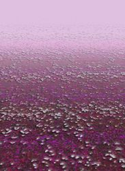

- Welcome to Touhou Wiki!
- Please register to edit. For assistance, check in with our Discord server or IRC channel.
Nameless Hill
Nameless Hill mɯᵝme̞ː no̞ o̞ka̠ | |
|---|---|
|
 The Nameless Hill in Phantasmagoria of Flower View
| |
| Location |
Opposite of Youkai Mountain, halfway up a small mountain |
| Residents | |
Appearances | |
| Official Games | |
| |
| Print Works | |
| |
Nameless Hill (無名の丘 Mumei no Oka) is a meadow full of purple and white lilies-of-the-valley on a mountain opposite Youkai Mountain. In the past, it was used as a place to abandon children who then later either died from the poison of the lilies or were abducted by youkai. It is somehow hidden away from the Human Village.
General Information[edit]
Not much is known about the location. It is named "Nameless" (無名) because, in the past, nameless children were abandoned here to be killed by the flowers here, only to be collected later by youkai. However, there are legends that some of the children were abducted and raised by mischievous youkai. Stories have been told that parents who did not want to see their own children die left them here in the hope that they can live with the youkai. It's believed that, because of these stories, people don't come here, not even youkai. It is believed to be the place where Medicine Melancholy came into being. The threat level of this place is 'Medium' and fairies and phantoms can typically be encountered here. The place seems to not get much direct sunlight and is fairly windy, so this place may not be warm at times.
The Hill's Appearance[edit]
Games[edit]
- Phantasmagoria of Flower View
The hill appeared as a stage location in Phantasmagoria of Flower View, in which it's the location for Medicine Melancholy. The stage generally appears on stage 7 in some scenarios of the game. Various characters will come here to look for leads towards the flower incident, only to find and defeat Medicine.
Spin-offs[edit]
- Shoot the Bullet
The hill appears on stage 4 of Shoot the Bullet, where Aya Shameimaru encounters Reisen Udongein Inaba, Medicine Melancholy and Tewi Inaba to try and take photos of their danmaku. There are 9 scenes in this stage, and it is the only stage in the game, apart for the Extra stage, to contain an extra character. The previous stage was at the Giant Toad's Pond at the Youkai Mountain, whilst the next stage is at the Scarlet Devil Mansion.
Gallery[edit]
The hill in Shoot the Bullet

The hill, as illustrated in Perfect Memento in Strict Sense